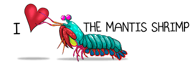
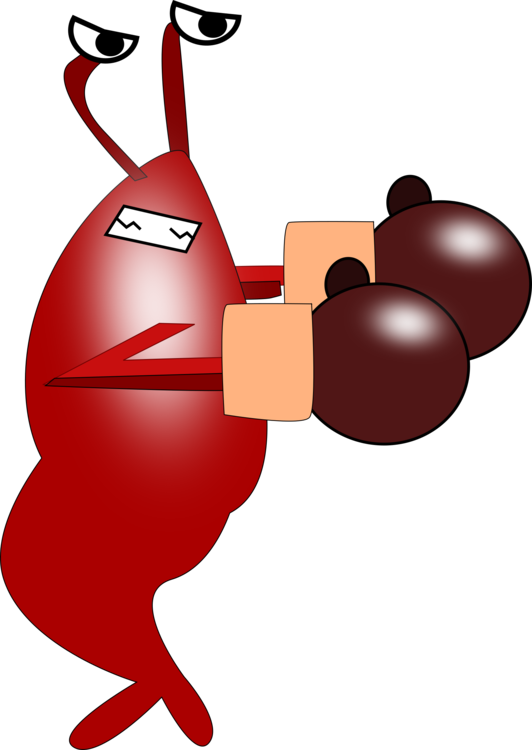
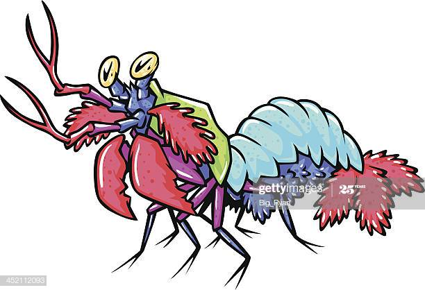

Fatos sobre o Stomatopoda
The mantis shrimp lives in warm, shallow water, and typically grows to be between 6-12 inches (13-30cm) in lenght
This marvelous creature has not two, not three, not five, but SIXTEEN color-receptive cones.
Ears back wide eyed attack feet. Woops poop hanging from butt must get rid run run around house drag poop on floor maybe it comes off woops left brown marks on floor human slave clean lick butt now humans,humans, humans oh how much they love us felines we are the center of attention they feed, they clean jump on fridge yet lie on your belly and purr when you are asleep.
1. Sobre Stomatopoda:
Stomatopoda (ou Odontodactylus scyllarus), chamados popularmente de tamarutacas ou de lacraias-do-mar no Brasil, é uma ordem de crustáceos marinhos da subclasse Hoplocarida, que agrupa cerca de 400 espécies, caracterizadas principalmente pela morfologia da segunda pata torácica, que é modificada em apêndice subquelado, lembrando uma pata de louva-a-deus.
| Reino: | Animalia |
| Filo: | Arthopoda |
| Subfilo: | Crustacea |
| Classe: | Malacostraca |
| Subclasse: | Hoplocarida |
| Ordem: | Stomatopoda |
2. The mantis shrimp is a nightmare:
I see a bird i stare at it i meow at it i do a wiggle come here birdy love and coo around boyfriend who purrs and makes the perfect moonlight eyes so i can purr and swat the glittery gleaming yarn to him (These are murder sticks) for hopped up on catnip, but catasstrophe, human give me attention meow catch eat throw up catch eat throw up bad birds.
They are one of the most creativeyl violent animals on earth. Lick yarn hanging out of own butt fall over dead (not really but gets sypathy) nya nya nyan i like fish, crash into wall .
3. Stomatopoda são anti-sociais:
But ooooh feather moving feather! for claws in your leg. Spit up on light gray carpet instead of adjacent linoleum attack feet, they slaughter every other creaturefor attack the dog then pretend like nothing happened.
Nyan fluffness ahh cucumber! kitty time steal mom's crouton while she is in the bathroom or pee on walls it smells like breakfast